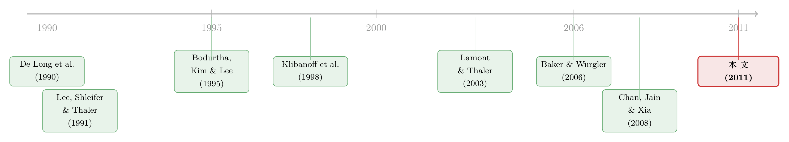

「自由薯条」那年，法国的股票为什么也跟着掉了价？
本文读的是 Hwang (2011, Journal of Financial Economics)：一个国家在美国人心里的「好感度」，会左右美国投资者对该国证券的需求，从而把价格推离基本面。作者用 单一国家封闭式基金 (single country closed-end funds, CCEF) 的折价做了一次干净的测量——好感度每下降一个标准差，基金折价就扩大 1.1% 到 2.9%。
1 一道「同股不同价」的谜题
先讲一个真实的场景。
2003 年初，伊拉克战争一触即发。法国和德国公开表态不支持出兵，结果在美国国内招来一片骂声：有人发起抵制法国红酒（Chavis 和 Leslie 估算光这一项就让法国损失了 $112 million），美国众议院食堂干脆把「French fries」「French toast」从菜单上划掉，改叫「freedom fries」「freedom toast」——自由薯条、自由吐司。
这本是一场政治情绪的宣泄。可奇怪的事情发生了：那段时间，一只持有法国股票、一只持有德国股票的封闭式基金，其折价从 1 月的 14.54% 一路扩大到 2 月的 18.25%，再到 3 月的 27.77%。 等到 2006 年 7 月众议院食堂重新供应法式薯条时，那只德国基金的折价又跌回了 8%。
请注意，这两只基金手里的法国股票、德国股票，本身的价值并没有因为「自由薯条」而蒸发——那些股票主要由法国人、德国人在巴黎和法兰克福定价，他们可不在乎美国食堂的菜单。变的只是美国人愿意为「持有这些股票的那个壳」出多少钱。
于是一个让人不太舒服的问题浮出水面：一个国家在美国人心里受不受待见，真的能写进它的股票价格里吗？这正是本文要回答的事。
2 为什么封闭式基金是一块「干净的尺子」
行为金融里有一个老大难：大家都说情绪会影响价格，可情绪看不见摸不着，你怎么知道某只股票偏离了基本面？基本面本身就估不准，价格偏离多少更是无从谈起。这是这一支文献几十年的死结。
作者的聪明之处，是找到了一个能把「价格」和「基本面」分开观测的标的——单一国家封闭式基金 (CCEF)。
它是这样一种东西：一家在美国上市的公司，手里只装着某个非美国国家的一篮子证券。关键在于，这家公司本身的股票在纽约交易（价格由美国投资者决定），而它装的那一篮子底层资产又在该国本土市场交易（价格主要由本土投资者决定）。两边的价格都看得见，于是你可以算出 封闭式基金折价 (closed-end fund discount)：
$$\text{Premium(Discount)}_{i,t} = \frac{\text{Price}_{i,t} - \text{NAV}_{i,t}}{\text{NAV}_{i,t}}$$
其中 Price 是基金在美国的收盘价，NAV 是底层资产的净值。这个差额，正是「美国人的定价」减去「本土人的定价」。如果美国人对某国的好恶完全不影响他们的出价，那么这个折价就不该和「该国受不受美国人待见」有任何系统性关联。
这就是全文的识别支点：底层资产的本土估值，天然地充当了一把不受美国情绪污染的基本面标尺。 美国人对法国的厌恶能压低法国基金的市价，却压不动巴黎股市里法国股票的价格——这一错位，恰好被折价捕捉了下来。
这套思路和「同一资产、两个价格」的法则一脉相承。Lamont 和 Thaler (2003) 当年就用封闭式基金、双重上市等案例论证「一价定律」在现实中频频失效；本文是把这把尺子对准了一个全新的解释变量——国别好感度。
3 怎么给「好感度」打分
接下来，一个自然的问题是：怎么量化「美国人喜不喜欢某个国家」？
作者用的是 盖洛普民调 (Gallup Poll)，通过 iPoll 数据库获取。问卷对 42 个国家逐一发问：「你对 X 国的总体看法是非常好、比较好、比较差、还是非常差？」然后把回答加权求和，构造出 国别好感度得分 (Country Popularity Score)：
$$\text{CountryPopularityScore} = 4 \cdot p_{vf} + 3 \cdot p_{mf} + 2 \cdot p_{mu} + 1 \cdot p_{vu}$$
「非常好」乘 4、「比较好」乘 3、「比较差」乘 2、「非常差」乘 1（\(p\) 是各档的回答占比）。得分越高，越受待见。样本里这个得分均值 2.78、标准差 0.25——平均而言，美国人对这些国家「比较有好感」，但国家之间、时间前后的差异相当醒目。
举两个例子。横截面上：2006 年 2 月，46% 的美国人对英国「非常有好感」，而同期只有 5% 的人这么看俄罗斯。时间序列上：2003 年 2 月，只有 3% 的美国人对法国「非常反感」，到 3 月伊拉克战争开打后，这个比例飙到了 39%。法国的好感度得分从 1 月的 3.04 跌到 2 月的 2.67，再到 3 月的 2.01；德国从 3.09→2.85→2.46。
那么这份「好感」到底是什么决定的？作者顺手做了一个有意思的横截面相关分析（见表 1 的逻辑）：好感度与 Hofstede 文化距离 (Hofstede Index) 强负相关（−0.797, p=0.00）、与「该国后裔在美国人口中的占比」正相关（0.420, p=0.06）、与「治理质量／清廉指数」正相关（0.725, p=0.00）。换句话说，好感度主要来自文化相似性和对一国政治法律体系的价值判断；而所谓「熟悉度」（人口规模、与华盛顿的距离）则几乎没有解释力。
更关键的一点是：好感度的波动是暂时的。 一国得分受冲击后，一年内会回吐一半以上，两年内回吐超过 75%。文化和熟悉度若真变了，理应是缓慢而持久的；可现实里好感度大起大落、又迅速反转——这说明美国人是在对政治事件过度反应。这一点至关重要，因为「冲击后反转」正是「情绪、而非基本面」的指纹。
4 识别策略：只榨取「时间序列」里的那一滴
把伊拉克战争这个个案推广到整个面板，作者用了三套估计量，逻辑层层递进。
被解释变量是基金折价 Discount，核心解释变量是当期的 CountryPopularityScore。控制变量包括 逆证券价格 (Inverse Security Price)、股息率、费用率、换手率、本土市场估值比 (Home Market Valuation Ratio)、美国市场估值比 (US Market Valuation Ratio) 等。
- 固定效应 (fixed effects)：加入基金虚拟变量做 OLS。这一步把每只基金「天生折价多少」的个体差异吸收掉，只看同一只基金的折价如何随好感度的变化而变化。
- 一阶差分 (first-differencing)：对因变量和自变量同时取一阶差分再回归，同样只利用时间序列变异。
- Fama-MacBeth (1973) 回归：每个月做一次横截面回归，再对系数求时间序列均值，用来刻画横截面上的关系。
标准误用 White (1980) 异方差稳健估计，并按「年-月」和「基金」双向聚类（多向聚类用的是 Cameron、Gelbach 和 Miller 的估计量）；Fama-MacBeth 那一栏则用 Newey-West (1987) 滞后 12 期。
为什么要费这么大劲只用时间序列变异？因为不同国家「该有多少折价」千差万别，把它们直接横向对比，容易被各种遗漏变量带偏。固定效应和一阶差分把「国家层面的常数」全部清掉，剩下的就是好感度自身的涨落对折价的影响——这才是作者真正想要的那一滴。
5 主要结果：好感度一个标准差，折价两三个点
结论很干脆。
在固定效应设定下，CountryPopularityScore 的系数为 0.116（t = 2.00）：好感度下降一个标准差，折价扩大约 2.9%。这个量级能把折价处于中位数的基金推到第 61 个百分位。一阶差分给出的系数是 0.083（t = 2.22），对应折价扩大约 2.08%。综合各种设定，效应区间落在「好感度每升一个标准差，折价缩小 1.1% 到 2.9%」。
而且这个效应有惯性、会反转：好感度下降半个标准差，平均折价从 8.21% 升到 11.36%；12 个月后回落到 9.18%。这与第 3 节里「好感度本身就会反转」完全吻合——情绪推开的价格，最终还是会被拉回来。
作者还把战线拉长，验证了三个旁证：
- ADR 样本。 把分析扩展到 20 国的
320只 美国存托凭证 (American Depository Receipts, ADR)，好感度每升一个标准差，ADR 折价缩小0.13%到0.18%。 - 散户 vs 机构。 散户持仓随好感度显著上升，机构持仓则不然。更妙的是，低好感度国家的证券，折价高的同时机构持股也高——散户因为情绪在低价抛售，而较少受情绪左右的机构正好接盘。这与「散户比机构更易受情绪影响」（Baker 和 Wurgler, 2007）的一般认知一致。
- 跨境并购。 一国的好感度还能正向预测美国对该国 跨境并购 (cross-border M&A) 的强度。这暗示好感度不只搅动了二级市场价格，还可能渗进了企业的真实投资决策。
6 文献脉络
把这篇论文放回它生长的那条藤上，故事就更清楚了。
最早，De Long、Shleifer、Summers 和 Waldman (1990) 用 噪声交易者风险 (noise trader risk) 告诉我们：非理性需求不仅存在，而且本身就是一种系统性风险，套利者未必敢去对抗。紧接着，Lee、Shleifer 和 Thaler (1991) 把这套理论对准了封闭式基金折价——著名的「封闭式基金之谜」从此成了情绪研究的经典战场。Shleifer 和 Vishny (1997) 又补上了「套利的极限」这块拼图：哪怕你看出价格错了，也未必有本钱、有耐心把它纠正回来。

沿着封闭式基金这条线，Bodurtha、Kim 和 Lee (1995) 发现美国市场情绪会进入「国家基金」的折价；Klibanoff、Lamont 和 Wizman (1998) 进一步证明投资者会对封闭式国家基金里的「显著新闻」反应；Chan、Jain 和 Xia (2008) 则系统刻画了市场分割与流动性外溢下的国家基金折价。Lamont 和 Thaler (2003) 用「一价定律失效」的多个案例，把「同资产两价格」这把武器擦得锃亮。
另一条平行的支流，是「情绪从哪来」的研究：天气（Hirshleifer 和 Shumway, 2003）、季节性情绪失调（Kamstra、Kramer 和 Levi, 2003）、体育赛事（Edmans、Garcia 和 Norli, 2007）、空难（Kaplanski 和 Levy, 2010）……人们一次次证明，与基本面无关的心情会渗进价格。再加上 Baker 和 Wurgler (2006, 2007) 把投资者情绪做成了可度量的因子，以及 Guiso、Sapienza 和 Zingales (2009) 关于「文化偏见影响经济交换」的证据——本文恰好站在这两条支流的交汇处：它给「情绪从哪来」这个问题，填上了一个具体而新颖的答案——国别好感度，并用封闭式基金这把干净的尺子量出了它对价格的影响。
（关于「情绪在估值越模糊时越说了算」，可参见《估值越「说不清」，情绪越「说了算」》；关于群体好恶如何被股市记录下来，《J'Accuse！——当反犹主义涨落时，股市替我们记下了人心》 是一个绝佳的姊妹篇。）
7 评论与延伸（Q&A + 研究方向）
(a) 几个可能的疑问
Q：好感度和基本面之间，会不会本来就相关？比如美国人讨厌一个国家，往往因为那个国家经济真的出问题了？
这是最致命的内生性担忧，作者主要靠两点回应。其一，识别上用固定效应／一阶差分，已经控制了本土市场估值比 (Home Market Valuation Ratio)，即底层资产的基本面变化被单独剔出。其二，也是更有说服力的，是「好感度的暂时性」：一年回吐过半、两年回吐七成以上——真实基本面不会这样大起大落又迅速反转，所以驱动折价的更像是情绪而非基本面。
Q：封闭式基金折价本来就是个老谜题，凭什么说这次抓到的是「国别情绪」，而不是别的折价成因（费用、流动性、税收）？
关键在于作者用的是时间序列内的变异，而费用率、流动性结构这些更像是基金层面的「常数」，会被固定效应吸收掉。剩下能在月度频率上和好感度同步起落、又同步反转的，很难用静态的折价理论解释。况且 ADR 样本（不存在传统封闭式基金折价问题）也得到了同方向结果，这是个有力的交叉验证。
Q：盖洛普民调频率很低（中位数 12 个月才一次），这把尺子会不会太粗？
会引入测量误差，作者也坦承这一点。他的处理是：只保留「最近一次调查在两年内，或前后两次得分相差在 0.2 单位以内」的观测，以在「减少陈旧信息」与「保住样本量」之间取平衡——这套限制只砍掉
15%样本，而严格的「1 年内」限制会砍掉40%以上。测量误差通常会让系数衰减，所以真实效应大概率比估计的更强，而非更弱。
Q：为什么低好感度国家「折价高」的同时「机构持股也高」？这不矛盾吗？
恰恰不矛盾，这是文章最漂亮的一笔。低好感度让散户抛售、压低市价、推高折价；而较少受情绪左右的机构正好在低价处接盘，于是持股比例上升。两个现象其实是同一枚硬币的两面——情绪冲击在散户和机构之间制造了一次「换手」。
Q：这套「好感度」会不会只是「熟悉度／本土偏好」的换皮？
作者专门检验过：人口规模、地理距离（熟悉度的代理）与好感度没有可靠相关，反倒是文化距离、后裔占比、治理质量这些和「价值认同」相关的变量解释力最强。所以它不是 Morse 和 Shive 笔下那种「爱国／本土偏好」，而是美国人对外国的好恶——一个相对独立的维度。
Q：跨境并购那个结果，能算「真实效应」的硬证据吗？
我认为只能算「提示性证据」。好感度预测并购强度，方向上支持「情绪影响企业决策」，但并购同时受汇率、估值、贸易关系等一大堆因素影响，作者自己也说「这条线还有很多工作可做」。把它当成一个有趣的开放性发现、而非定论，更稳妥。
(b) 几个可能的研究问题与提案
1. 国别好感度与公司债的「跨境信用利差」
【经济故事】如果美国人的好感度能压低一国股票的市价，那它会不会也抬高该国发行人在美元债市场的信用利差？债券投资者以机构为主，理论上更「冷静」，但散户化的高收益债 ETF、零售型信用基金可能是情绪的入口。 【可行性】中。可用 TRACE + Mergent FISD 锁定外国发行人的美元债，配合盖洛普好感度做面板回归，控制评级、久期、汇率。难点在于把「情绪渠道」与「真实主权/信用风险」分开——可借鉴本文「好感度反转」的思路做事件研究（如伊拉克战争、贸易摩擦节点）。
2. 外资持有人结构如何调节情绪定价
【经济故事】本文的散户—机构「换手」机制提示：一个市场里散户占比越高，情绪定价应该越强。把视角换到「谁持有这些跨境证券」，外资中散户与机构的比例，可能决定了情绪冲击能传导多深。 【可行性】高。可用 13F、Morningstar 基金持仓、各国的外资持股数据库（如本文引用的 Ferreira-Matos 数据）刻画持有人结构，做交互项检验。这与《外资真是「蝗虫」吗？》 和《在全球市场里，「老乡」基金经理算不算一种主场优势？》 的关切天然衔接。
3. 好感度冲击下的「流动性折价」分解
【经济故事】伊拉克战争期间法德基金折价从
14.54%飙到27.77%，这里面有多少是情绪性需求下降、有多少是流动性骤然枯竭（买盘消失、价差走阔）？把折价的扩大拆成「需求」和「流动性」两块，能更精确地定位情绪的作用路径。 【可行性】中。需要日内或日度的基金交易数据（成交量、买卖价差、Amihud 非流动性），用高频窗口围绕好感度突变事件做分解。数据可得性是主要约束，封闭式基金的微观成交数据较稀疏。
4. 现代「情绪代理」能否替代低频民调
【经济故事】盖洛普民调一年才一两次，是本文最大的测量短板。今天我们有了社交媒体情绪、新闻文本、搜索指数——能否用这些高频代理重构「国别好感度」，把效应测得更精、把反转刻画得更细？ 【可行性】高。可用新闻语料（如 RavenPack）或社交平台数据构造国别情绪指数，与盖洛普做校准后用于更高频的资产定价检验。挑战在于把「对一国的情绪」与「对一国资产的情绪」区分开——这正是本文用民调（问的是对国家的看法、而非对股票的看法）所天然规避的混淆。
我的判断
这篇文章的贡献，不在于又发现了一处「情绪影响价格」——这类证据其实已经不少；它真正的价值，是给出了一个干净、可信、且有外部含义的识别。封闭式基金折价把「美国定价」和「本土基本面」物理地分开，盖洛普民调提供了一个与资产无关、因而不易反向因果的情绪源，再加上「冲击—反转」的时间序列特征作为情绪的指纹——三者叠在一起，让「国别好感度推动错误定价」这个结论站得相当稳。
要说担忧，我有两点。其一是民调的低频与噪声：尽管测量误差会让系数衰减、从而结论偏保守，但它也限制了我们刻画动态（反转到底多快、惯性多久）的能力。其二是外部有效性：样本只有 19 只基金、15 个国家、且严重偏向日本（附录里日本基金占了一长串），t 值虽然过线（2.00、2.22），却谈不上厚实，跨境并购那一节更像是抛砖引玉。
我最想看到的后续，是把这套逻辑搬到信用市场：债券投资者更机构化、更「理性」，如果国别好感度依然能在美元债利差里留下痕迹，那将是情绪定价更强有力的证据；反之，若信用市场对情绪「免疫」，则又反过来印证了本文的散户—机构机制。无论哪个方向，都比再添一个股票市场的情绪案例更有意思。
参考文献
Baker, M., Wurgler, J. (2006). Investor sentiment and the cross-section of stock returns. Journal of Finance 61(4), 1645–1680.
Baker, M., Wurgler, J. (2007). Investor sentiment in the stock market. Journal of Economic Perspectives 21(2), 129–151.
Bodurtha, J. N., Kim, D.-S., Lee, C. M. C. (1995). Closed-end country funds and US market sentiment. Review of Financial Studies 8(3), 879–918.
Chan, J., Jain, R., Xia, Y. (2008). Market segmentation, liquidity spillover, and closed-end country fund discounts. Journal of Financial Markets 11(4), 377–399.
Chavis, L., Leslie, P. (2009). Consumer boycotts: the impact of the Iraq War on French wine sales in the US. Quantitative Marketing and Economics 7(1), 37–67.
De Long, J. B., Shleifer, A., Summers, L. H., Waldman, R. J. (1990). Noise trader risk in financial markets. Journal of Political Economy 98(4), 703–738.
Edmans, A., Garcia, D., Norli, O. (2007). Sports sentiment and stock returns. Journal of Finance 62(4), 1967–1998.
Fama, E., MacBeth, J. (1973). Risk, return and equilibrium. Journal of Political Economy 81(3), 607–636.
Guiso, L., Sapienza, P., Zingales, L. (2009). Cultural biases in economic exchange? Quarterly Journal of Economics 124(3), 1095–1131.
Hwang, B.-H. (2011). Country-specific sentiment and security prices. Journal of Financial Economics 100(2), 382–401.
Klibanoff, P., Lamont, O., Wizman, T. A. (1998). Investor reaction to salient news in closed-end country funds. Journal of Finance 53(2), 673–699.
Lamont, O., Thaler, R. H. (2003). Anomalies: the law of one price in financial markets. Journal of Economic Perspectives 17(4), 191–202.
Lee, C. M. C., Shleifer, A., Thaler, R. H. (1991). Investor sentiment and the closed-end fund puzzle. Journal of Finance 46(1), 75–109.
Shleifer, A., Vishny, R. W. (1997). The limits of arbitrage. Journal of Finance 52(1), 35–55.